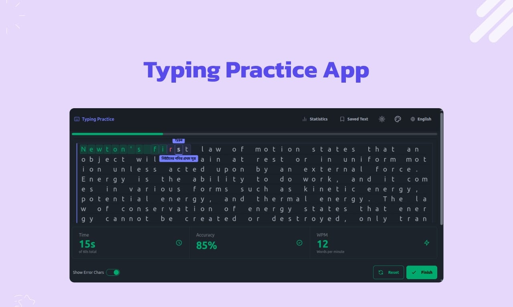
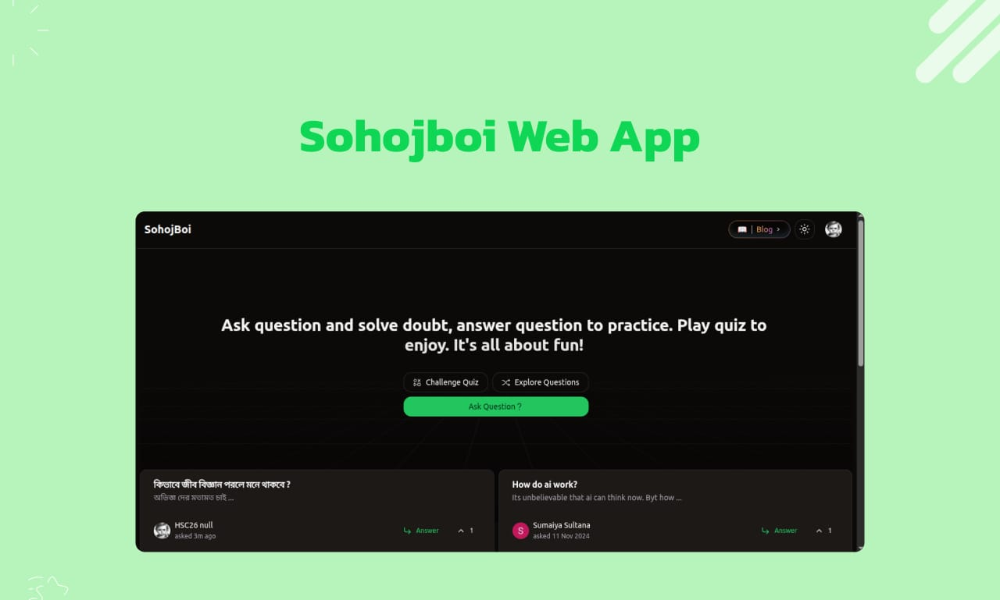
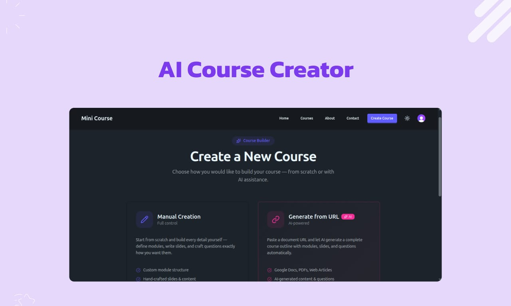
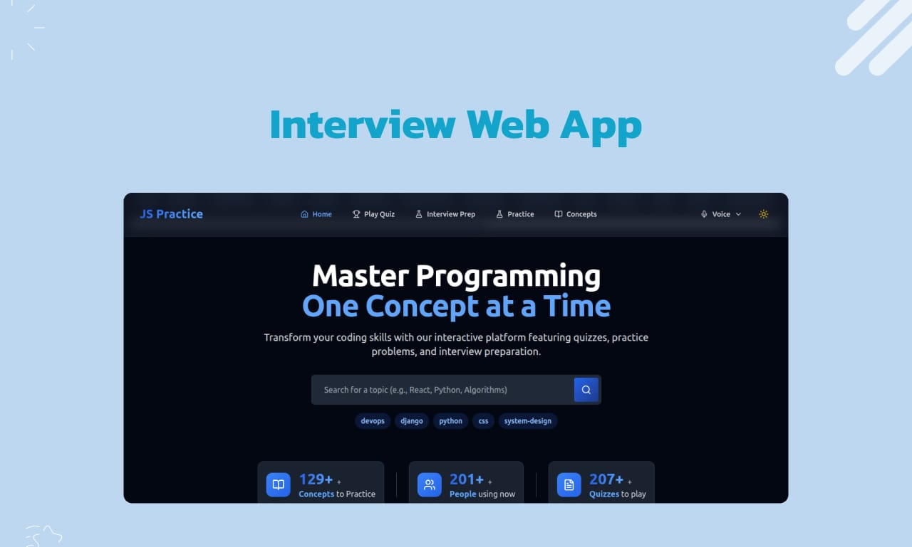
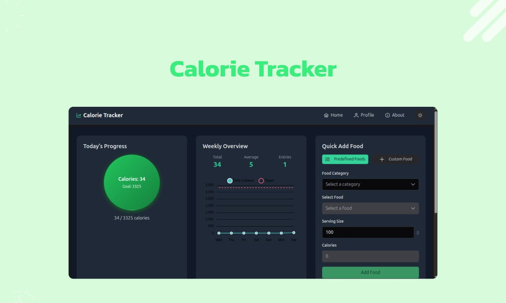

Typing Practice App
★ 36Practice and improve typing with timed tests, live WPM, accuracy and per-character error feedback. Lessons in English and Bangla.
Available for remote work · Dhaka, GMT+6
Remote software engineer building production web products — from pixel-perfect landing pages to full AI-powered apps on the React & Next.js stack.
00 Who I am
I turn ideas into shipped products — end to end.
My sweet spot is the React + Next.js stack. I can take a startup from a blank repository to a live, conversion-focused landing page, then extend it into a real application with authentication, payments, databases and AI features baked in.
I care about the parts users feel: fast pages, clear flows, accessible interfaces. Remote-first, async by default, and comfortable owning a feature from wireframe to production.
01 Selected work
A selection of web apps — utility tools, learning platforms and SaaS starters. Every card links to the live product or the source.

Practice and improve typing with timed tests, live WPM, accuracy and per-character error feedback. Lessons in English and Bangla.

An educational platform for asking and answering questions, taking quizzes and reading a study blog.

An AI-powered learning platform that turns public URLs and documents into structured, step-by-step courses.

Practice programming concepts across JavaScript, Rust, Go, React and more, in one focused app.

A responsive meal logger that tracks daily intake and monitors fitness goals in real time.
A starter kit for scalable SaaS: authentication, database integration and a responsive, conversion-ready foundation.
02 Open source
I contribute fixes to open-source tools I actually use. Recent work lands in the Rust creative tools at Storytold, alongside smaller community projects.
Open-source photo editor written from scratch in Rust. Fixed slow shutter speeds printing as the wrong fraction in File Info.
Open-source vector art tool in pure Rust. Made a selection move pause and resume correctly when the pointer crosses a panel.
Open-source interface design and prototyping. Fixed recovery-folder lock waits and per-item merging of lists on branch merges.
03 Independent studio
A slow website costs you conversions. Sajallabs is my audit and optimization practice for speed, search visibility, accessibility and UX — find the friction, fix the causes, verify the numbers moved.
Typical result
Load time, before and after optimization
| Metric | Before | After |
|---|---|---|
| LCP | 5.80 s | 1.40 s |
| TBT | 814 ms | 120 ms |
| JS payload | 1.24 MB | 190 KB |
| Requests | 54 | 24 |
Trusted by 50+ people · Dhaka, GMT+6
04 Toolkit
05 Contact
Flexible for remote, contract and project-based engagements. If you’re building something ambitious — or your site is slower than it should be — say hello.
ashsajal@yahoo.comOpen to new work · GMT+6